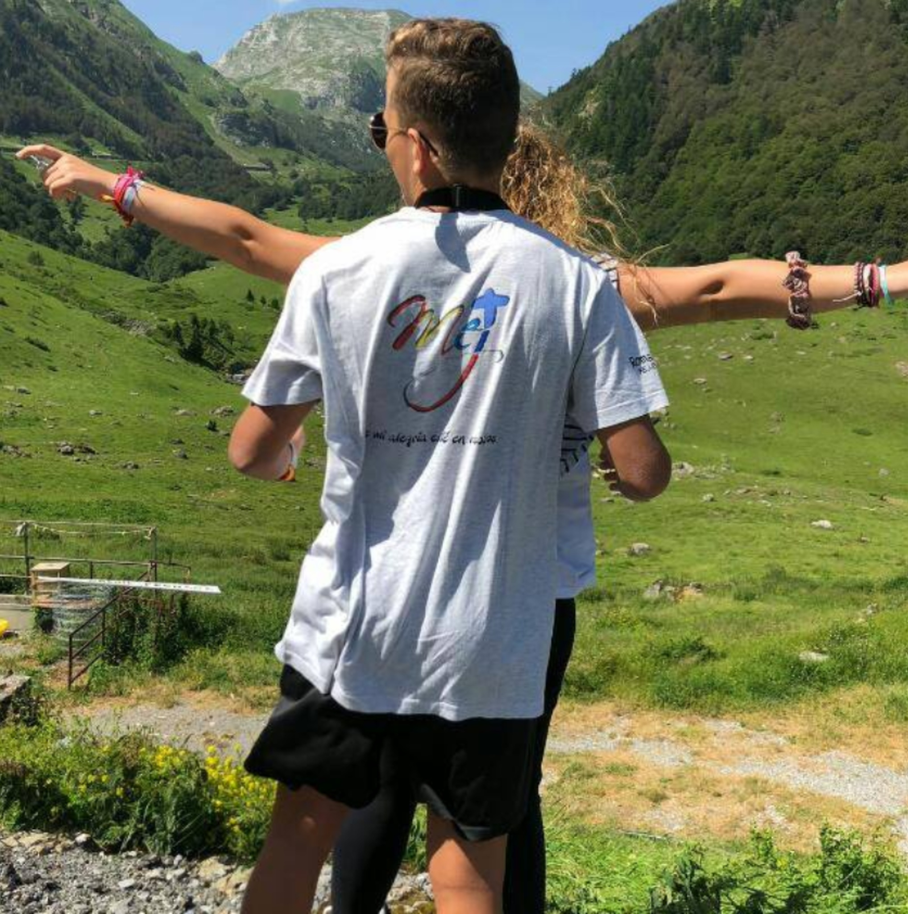

¿Qué es el MEJ?
Movimiento Eucarístico Juvenil
El MEJ (Movimiento Eucarístico Juvenil) es un movimiento de la Iglesia Católica dirigido a jóvenes que desean profundizar en su fe y vivir la Eucaristía como centro de su vida espiritual.
Fundado hace más de 40 años, el MEJ reúne a jóvenes de diferentes edades y backgrounds en un ambiente de fraternidad, oración y crecimiento espiritual.
En MEJ Madrid, somos una comunidad abierta y acogedora donde los jóvenes pueden expresar su fe, compartir experiencias de vida y construir amistades duraderas.

Nuestra Misión y Valores
Fe Eucarística
La Eucaristía es el centro de nuestra vida espiritual. Nos reunimos regularmente para celebrar la Misa y adorar al Santísimo.
Fraternidad
Construimos una comunidad de jóvenes que se apoyan mutuamente en el camino de la fe y la vida.
Formación
Promovemos la formación espiritual a través de retiros, estudios bíblicos y programas de liderazgo.
¿Quién puede unirse?
El MEJ está abierto a jóvenes de 15 a 30 años que deseen:
- 💒 Profundizar en su fe católica
- 👫 Conocer jóvenes con valores similares
- ✝️ Vivir la Eucaristía de manera más consciente
- 🌱 Crecer espiritual y personalmente